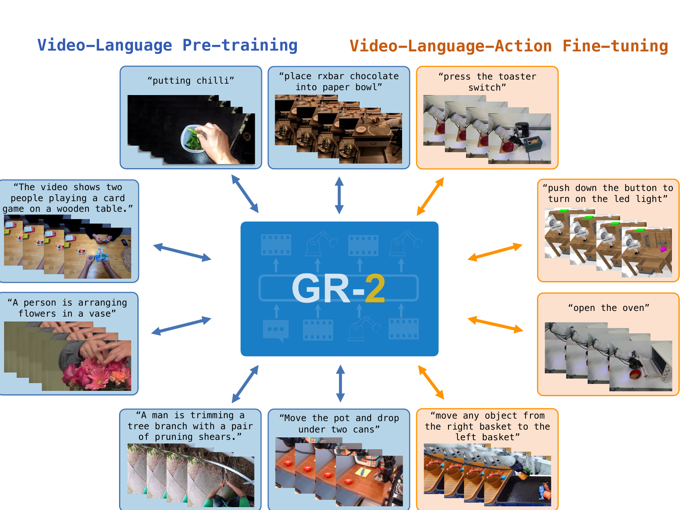

GR-2: A Generative Video-Language-Action Model with Web-Scale Knowledge for Robot Manipulation
Cheang 等 · 2024 技术报告 · arXiv:2410.06158 · Zotero PV2QIVNS
GR-2 把 GR-1 的未来视觉预测扩展到 38M 视频片段和离散 VQ 图像 token，并把单步动作升级为 cVAE action chunk：模型同时“想象下一段多视角视觉”与“输出可由控制器执行的轨迹”。
§1 Introduction：当视频预训练从“有帮助”变成真正的数据规模实验
GR-1 已经说明视频预测可以帮助机器人策略，但仍留下一个规模问题：如果世界知识真能从视频迁移，扩大到网络级视频后，策略是否会获得对新物体、新场景和长任务更稳定的先验？机器人数据无法便宜地回答这个问题，因为跨场景采集速度远低于网络视频增长速度。
GR-2 将预训练扩展到 3800 万文本—视频片段、约 500 亿 token。它先自回归预测未来离散图像 token，学习人类活动与物体动态；随后在多视角机器人轨迹上联合生成未来视频与 action trajectory。相较 GR-1，动作不再主要是单步回归，而由 cVAE 生成一段轨迹，以降低控制抖动并表达多模态动作。
展开原文 · 规模锚点
“pre-trained on 38 million text-video data”
§2 Related Work：视频基础模型怎样进入机器人策略
视频预测策略可分为显式级联与联合模型：前者如 UniPi 生成未来再经 IDM，便于观察规划但推理慢；后者如 GR-1 在同一骨干联合动作和图像，部署链更短。GR-2 延续后者，并把重点从“目标函数可迁移”推进到“网络视频规模是否可迁移”。
与 OpenVLA 一类把网络图文知识迁移到动作 token 的 VLA 相比，GR-2 预训练的是时间连续的未来图像 token，因此更直接接触运动和交互结果。与纯视频生成基础模型相比，它必须解决机器人多视角、低层状态和连续控制的对齐；cVAE action trajectory head 是这一步的专用接口，而不是由视频 token 自动产生动作。
§3 从 GR-1 到 GR-2
§4 视觉 token 与动作轨迹的联合模型

1. 输入任务与历史
多视角观测和状态把开放视频先验锚定到具体机器人。
输入是什么：相机图像或视频，加上任务指令和机器人当前状态。它们还是原始观测，模型尚未把它们变成可用于预测或控制的特征。
这一步究竟做什么：本步骤执行“输入任务与历史”。具体来说，多视角观测和状态把开放视频先验锚定到具体机器人。 这里处理的只是整条链路中的一个接口：把上一步的结果整理成下一步能够正确读取和继续计算的形式。
输出到哪里：经过本步骤处理、含义更明确的中间结果。这个结果会交给下一步“自回归预测未来视觉”继续处理。
为什么不能省略：它把未经处理的原始问题变成后续模块可以计算的输入，是整条链路的起点。
2. 自回归预测未来视觉
离散 token 令视觉生成可以沿用语言模型式目标。
输入是什么：来自上一步“输入任务与历史”的产物：经过本步骤处理、含义更明确的中间结果。本步骤还会按论文设置读取当前条件、时间步或训练信号。
这一步究竟做什么：本步骤执行“自回归预测未来视觉”。具体来说，离散 token 令视觉生成可以沿用语言模型式目标。 模型从相同起点产生候选未来，后续模块再检查这些未来是否符合条件、物理规律或动作需要。
输出到哪里：一个或多个候选未来、动作或轨迹，以及必要的中间状态。这个结果会交给下一步“共享时序语义”继续处理。
为什么不能省略：它承担上下两步之间的接口；缺少它，前一步产生的信息无法以正确格式或正确含义传到下一步。
3. 共享时序语义
38M clips 学到物体、动作和进展状态。
输入是什么：来自上一步“自回归预测未来视觉”的产物：一个或多个候选未来、动作或轨迹，以及必要的中间状态。本步骤还会按论文设置读取当前条件、时间步或训练信号。
这一步究竟做什么：本步骤执行“共享时序语义”。具体来说，38M clips 学到物体、动作和进展状态。 这个动作会真正改变环境，所以系统还要读取执行后的新观测，检查模型预期与现实之间的差距。
输出到哪里：经过本步骤处理、含义更明确的中间结果。这个结果会交给下一步“输出动作轨迹”继续处理。
为什么不能省略：它承担上下两步之间的接口；缺少它，前一步产生的信息无法以正确格式或正确含义传到下一步。
4. 输出动作轨迹
cVAE 保留多模态轨迹，再由底层控制器高频跟踪。
输入是什么：来自上一步“共享时序语义”的产物：经过本步骤处理、含义更明确的中间结果。本步骤还会按论文设置读取当前条件、时间步或训练信号。
这一步究竟做什么：本步骤执行“输出动作轨迹”。具体来说，cVAE 保留多模态轨迹，再由底层控制器高频跟踪。 这个动作会真正改变环境，所以系统还要读取执行后的新观测，检查模型预期与现实之间的差距。
输出到哪里：可发送给机器人控制器的动作，以及执行后重新观测到的真实状态。这是图中这条链路的最终产物，随后会进入真实执行、模型更新或指标评测。
为什么不能省略：它把前面得到的内部结果落实为可执行动作、可训练模型或可解释指标，完成从方法到结果的最后一步。
§5 Web-scale 预训练到底是什么
- $\mathcal D_{video}$
- GR-2 预训练使用的视频集合，混合教程、第一视角、动作识别与机器人数据。
- $38\text{M clips}$
- 片段数量说明规模，但不同来源的时长、采样率和重复度不同，不能直接当作独立经验数。
- $50\text{B tokens}$
- 送入自回归模型的离散视频 token 预算，是训练计算量更直接的口径。
- 混合的目的
- 互联网视频提供语义与人类交互先验，机器人视频提供本体和视角接地；提升不能只归因于模型结构。
这些视频不都含机器人动作标签。大规模部分主要训练未来视觉生成；机器人数据再让共享表征对齐动作轨迹，这正是 WAM 用 actionless video 扩展数据规模的典型路径。
§6 为什么要 action chunk
- $a_{t:t+k}$
- 一段 Cartesian 位姿与夹爪控制，而非单个时刻动作。
- cVAE
- 用潜变量表达同一目标的多种可行轨迹，降低均值回归造成的僵硬。
- WBC
- 全身控制器以 200 Hz 把低频语义轨迹转换成关节命令。
§7 贡献与局限
§8 实验归因与复现：规模、结构和动作轨迹要分别核算
最小可信复现清单
- 给出 3800 万片段的去重、过滤、字幕生成和采样权重。
- 报告视频 token 序列长度、码本大小、图像预测 teacher forcing 策略。
- 说明 cVAE latent、KL 权重、action horizon 与部署重规划频率。
- 在同一 GR-2 架构上做不同预训练规模，而非跨模型比较。
- 报告 web-scale 增益在已见任务、新物体、新背景与新技能上的分解。
GR-2 的强主张来自“视频先验能随网络数据扩展”，但验证时必须把 38M 数据、离散视频建模和 cVAE 动作轨迹三种变化拆开。